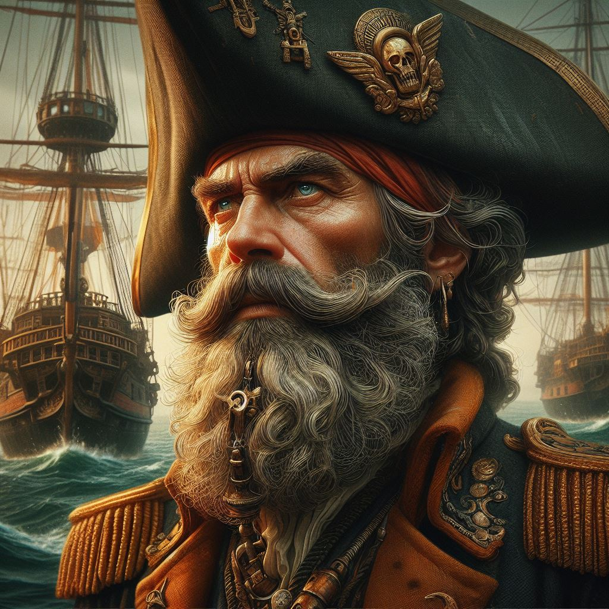

| Име на героя | Визуално описание на героя | Изображение, представящо героя | Бележки за героя |
|---|---|---|---|
| Джак | Джак е герой, изпълнен с приключенски дух и ненаситна жажда за знания. Той е човек, който не се страхува да прекрачва границите и да изследва неизвестното. Джак е млад мъж, авантюрист по душа, винаги жадуващ за следващото голямо приключение. Джак е висок и строен, със златиста коса и сини очи - живи и изразителни, отразяващи интелектуалната му мощ и любопитство. Той притежава несломим дух и е готов да помогне във всяка ситуация. | Описанието на героя е създадено с помощта на изкуствения интелект BgGPT. Изображението на героя е генерирано с Copilot посредством описание на външния вид и качествата на героя. | |
| Мария | В Мозамбик Джак среща Мария - красива местна жена с остър ум и смелост. По-късно тя става негова любима. Мария е силна, интелигентна и решителна жена, чиято страст към знанието и разбирането е несравнима. Тя е човек, който не се страхува от предизвикателствата и е готова да поеме рискове в името на откритията. Нейната упорита работа и постоянство често служат като вдъхновение за тези около нея, карайки ги да вярват в силата на човешкия ум. | Описанието на героинята е създадено с помощта на изкуствения интелект BgGPT. Изображението на героинята е генерирано с Copilot посредством описание на външния вид и качествата на героя. | |
| Джонсън | Капитан Джонсън е корав морски капитан, който управлявал кораб, наречен "The African Queen". Капитан Джонсън е авантюрист по душа. Той е първият, който разкрива къде е скрито "Окото на Ксимбане". Капитан Джонсън е опитен мореплавател, известен със способността си да ръководи кораба си през най-опасните води с непоклатима прецизност. Той е човек, който се чувства еднакво комфортно както на сушата, така и на морето, и е прекарал по-голямата част от живота си в изследване на неизследвани територии. |  | Описанието на героя е създадено с помощта на изкуствения интелект BgGPT. Изображението на героя е генерирано с Copilot посредством описание на външния вид и качествата на героя. |